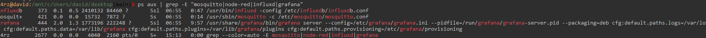
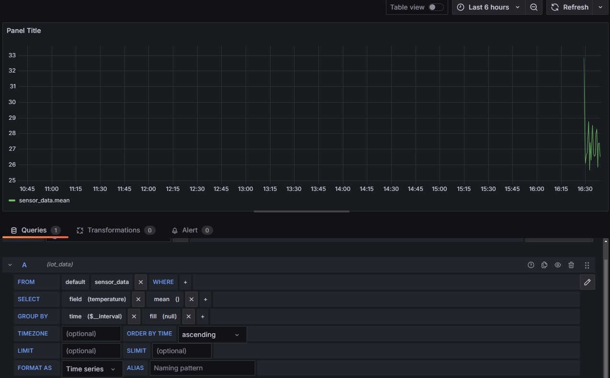
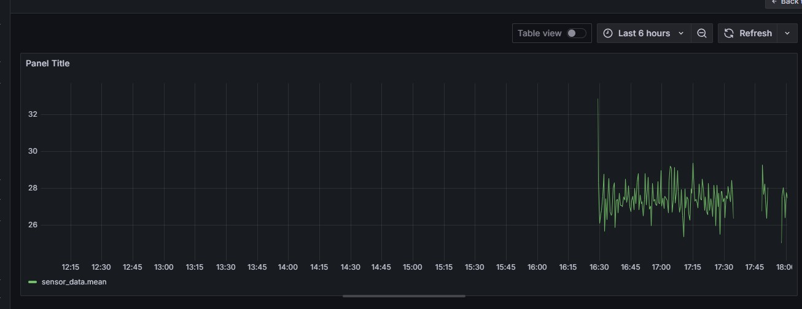

IoT Data Monitoring System
Imagine a world where device data is tracked in real time, delivering insights at a glance. That's exactly what I've built, a basic version of it. In the age of the Internet of Things (IoT), where devices are constantly talking to each other, solutions like this are the backbone of industries, smart homes, and even precision agriculture. This project simulates temperature sensor data, streams it via MQTT, stores it in InfluxDB, visualizes it live in Grafana, and analyzes it in Jupyter Notebook.
1. Setting the Stage – A Strong Foundation
I started by building a reliable environment on Windows using WSL—as I am more comfortable with Linux but still like using Windows. Why these tools? Each brings something unique to the IoT table and they are free. Here's what I set up:
- Mosquitto MQTT: A lightweight communication protocol perfect for IoT, thanks to its low resource use and reliability, running on port 1883.
- Node-RED: A visual programming tool that ties everything together effortlessly—like LEGO for tech enthusiasts.
- InfluxDB: A database optimized for time-series data, tailor-made for sensor readings.
- Grafana: Turns raw numbers into stunning, real-time, interactive charts.
- Jupyter Notebook: My playground for data experiments and analysis.
It all came together like a perfectly solved puzzle!
2. Database Setup – A Home for Data
Next, I configured InfluxDB to securely store temperature data. With a simple CREATE DATABASE iot_data command, I carved out a space for my data, and SHOW DATABASES confirmed everything was ready. This step is critical—without a solid database, there's no foundation for analysis or visualization.

3. Node-RED – The Data Maestro
Node-RED is the heart of this system—a conductor directing the orchestra. I designed a flow that grabs data from MQTT, formats it as JSON, and sends it to InfluxDB. Its visual interface makes integrating technologies a breeze, turning Node-RED into a powerhouse for IoT projects.

4. Data Generator – Bringing It to Life
I wrote a Python script in Jupyter Notebook to mimic a real IoT sensor. Every 2 seconds, it generates a random temperature between 20–35°C and sends it via MQTT. Simulating data is vital during testing—it lets me validate the system without physical hardware, speeding up development and debugging.
import paho.mqtt.client as mqtt
import random, time, json
client = mqtt.Client()
client.connect("localhost", 1883)
while True:
temp = round(random.uniform(20.0, 35.0), 2)
data = {"temperature": temp, "timestamp": int(time.time())}
client.publish("sensor/data", json.dumps(data))
print(f"Sent: Temperature: {temp}°C, Time: {data['timestamp']}")
time.sleep(2)

5. Data Check – Ensuring It Works
To confirm everything was running smoothly, I scripted a data retrieval from InfluxDB. Seeing a neat table of temperatures and timestamps was proof my system was alive and kicking!

6. Grafana Magic – Seeing Is Believing
Grafana brings data to life with real-time visualizations. I built a dashboard to display live temperature trends—a window into my system, showing data flowing and evolving over time.
7. Full Launch – Harmony in Action
I fired up all components—Mosquitto, InfluxDB, Node-RED, Grafana—and watched them work in sync. Data flowed from the generator to the dashboard like a well-oiled machine.
8. Data Analysis – Uncovering Patterns
Using Jupyter Notebook, I analyzed the collected temperature data to spot trends and patterns. This offers valuable insights—like whether temperatures spike at certain times—laying the groundwork for future improvements.

9. Advanced Analytics – Digging Deeper
In Jupyter, I crafted a predictive model to forecast temperature trends. It's like having a smart assistant that guesses future values based on past data.
from statsmodels.tsa.holtwinters import ExponentialSmoothing
model = ExponentialSmoothing(temp_series, trend="add").fit()
forecast = model.forecast(10)
print("Temperature forecast for the next 10 periods:")
print(forecast)

10. Problem-Solving – Tackling Challenges
Not everything went smoothly at first, especially bringing data from InfluxDB to Grafana was somewhat challenging, but solving problems is half the fun! Here's how I tackled hurdles and learned along the way:
| Issue | Solution |
|---|---|
| Mosquitto wouldn't start | Checked ports with netstat -an |
| No data in Node-RED | Added a debug node |
| Node-RED function node errors | Fixed JavaScript syntax and redeployed |
| JSON structure issues | Adjusted the node to extract temperature values correctly |
| Data missing in Grafana | Verified InfluxDB structure and tweaked the query |
| Nested JSON in InfluxDB | Modified Node-RED flow to save clean numeric values |
11. Useful Commands – Tools I Relied On
These commands helped me navigate the project and keep everything on track:
# Checking ports
netstat -an | findstr "1883 8086 3000 1880"
# Opening InfluxDB
influx

Why It Matters – The Bigger Picture
This project is more than just code – it demonstrates how IoT can help monitor data in a practical way. Whether in factories, smart homes, or other applications, it provides the ability to track what's happening in real-time. I tested each component to ensure it works well, and in the future, I'd like to connect real sensors and perhaps add notifications for important changes. This is a starting point with potential for further development.
If you want to see the details or work on something similar, check out my GitHub or contact me at [your.email@example.com]. I'm always happy to discuss technologies!